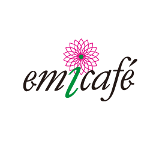
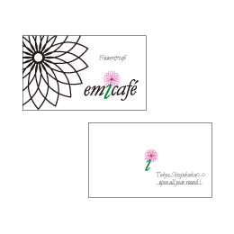
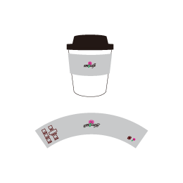
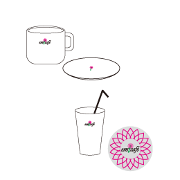
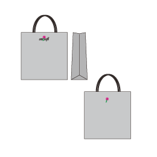
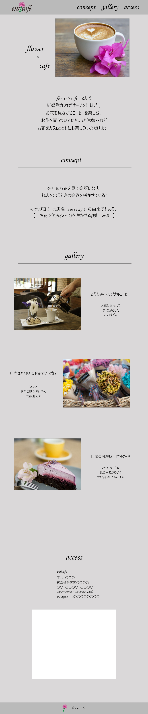

concept
"お店のお花を見て笑顔になり、 お店を出るときは笑みを咲かせている”
- shopイメージ
- お花屋さんを兼ねているカフェとして、”お花が１本から自由に購入できる”ことが特徴です。価格はリーズナブルで気軽にお店に入りやすいように設定されています。
店内は白色を基調としてお花を目立たせるシンプルな作りで、どこを写真で切り取ってもおしゃれな雰囲気。 - キャッチコピー
- 店名「emicafé」の由来でもある、 【お花で笑み (emi) を咲かせる (咲＝ emi)】
- ターゲット
- 20～30代の女性
rogo

・店内の雰囲気に合うように全体的にシンプルにしながら、パッと見てお花が目を引くようなデザインとしました。
・中心の「ⅰ」は１本からお花が自由に購入できることと、 中心（＝心）に花が咲くイメージが込められています。
・最初と最後の「ｅ」の文字は笑顔（スマイルマーク）を表しています。お店に入るときも出るときも笑顔になる様を表現しました。
goods
- 
ショップカード - 
テイクアウト用カップとスリーブ - 
店内用カップとコースター - 
ショップバッグ
website

カフェのwebサイトのトップページを制作しました。
全体カラーに無彩色を使ってシンプルに構成しつつ、カラフルなお花やおしゃれなケーキなどの店内写真を入れ込むことで 洗練されたお店であることをアピールし、 ターゲットである２０～３０代の女性の目に留まるようなデザインを目指しました。
架空のお店であるため、今回はフリー素材の写真を使用していますが 写真選びもお店のイメージに合うよう慎重にセレクトしています。